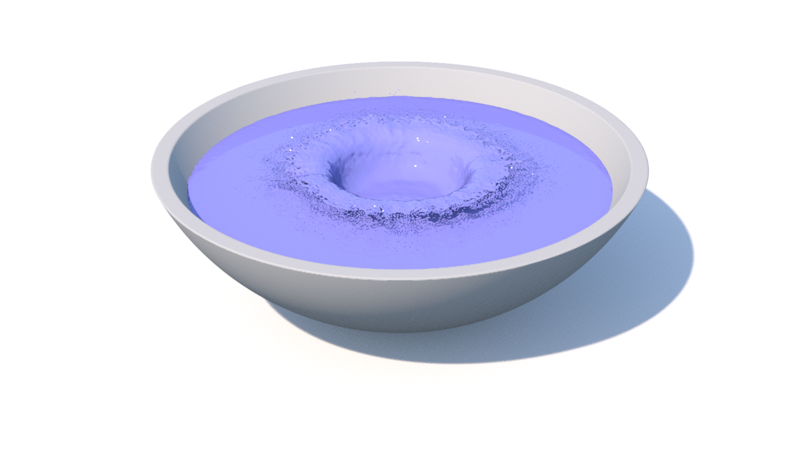

|
潮風フレームワーク
研究開発に特化したコンピューターグラフィックスのための流体ソルバ
|


|
|
潮風フレームワーク
研究開発に特化したコンピューターグラフィックスのための流体ソルバ
|
|
潮風を確実にコンパイルするには、Docker イメージを使った方法がお勧めです。まず、Docker を入手して、インストールします。そして、次のコマンドを実行します:
このコマンドで、潮風のコンパイル環境が自動的にダウンロードされ、Docker コンテナが作成され、ログインされます。注意事項として、–rm オプションでは、作成された Docker コンテナはログアウトすると消去されます。つまり、コンテナ内のファイルは全て失われてしまいます。もし、将来的にコンテナで作業をしたい場合は、–rm オプションを外すか、-v ${PWD}:/var/www/html オプションを追加して下さい。このオプションでは、ホストのカレントディレクトリをコンテナの作業ディレクトリにマッピングします。次に、次のコマンドを実行してソースコードをダウンロードします:
最後に、次のコマンドを実行して潮風をコンパイルします。
コンパイル出来たら、次のコマンドを実行して潮風を実行します。
しばらく経って http://localhost:8080/shiokaze/log_waterdrop/mesh_img/ にアクセスすると、下の図のような結果が閲覧できます。もし、自身で Docker イメージをビルドしたい場合、対応する Dockerfile が shiokaze/scripts/Dockerfile にあります。現在、Docker を通じてコンパイルされた潮風は、インタラクティブなユーザーインターフェースの表示がありません。もしこれが必要な場合、次の章に進んで下さい。

まず、潮風のソースコードを以下のコマンドを実行してダウンロードします。
潮風を macOS でコンパイルするには、Xcode のコマンドラインツールと Homebrew がインストールされている必要があります。それぞれ
でインストールできます。インストール出来たら、Homebrew を通して必要なパッケージをインストールします。これは、
で行えます。
まず、GCC のコンパイラのバージョンが 6 以上であることを確認して下さい。潮風を Debian でコンパイルするには、必要なパッケージがインストールされている必要があります。これは、次を実行して行います。
潮風は Waf ビルドシステムを採用しています。最初に、ビルド環境を次のコマンドで整えます。
次に、実際にコンパイルとライブラリ生成を次のコマンドで行います。
最後に、コマンドを実行します。
以下のようなシミュレーションが実行されれば、潮風の設定は無事完了です。

 1.8.17
1.8.17